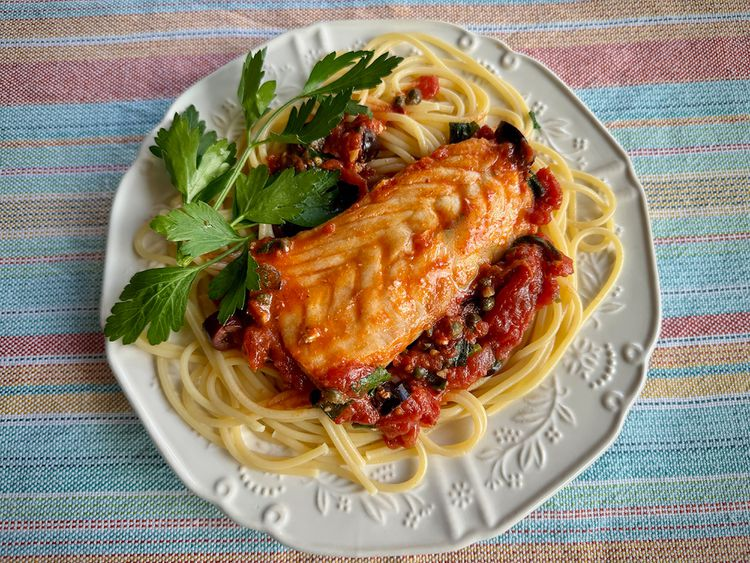

Home
Fish Puttanesca

How to Make Lasagna
This fish puttanesca, served over spaghetti, comes together quickly. Normally, puttanesca sauce, simple but robust, doesn’t include a protein, but it’s easy to add some cod filets, and the addition barely influences the cooking time. Any mild white fish will be just fine in this dish.
Ingredients:
- 1/2 pound spaghetti
- 2 tablespoons olive oil
- 2 tablespoons drained capers
- 1 tablespoon anchovy paste, or to taste
- 4 cloves garlic, peeled and thinly sliced
- 1 teaspoon crushed red pepper (optional)
- 1 (28 ounce) can whole, peeled San Marzano tomatoes
- 1/2 cup pitted and sliced Kalamata olives
- 2 tablespoons minced fresh Italian parsley
- salt and pepper to taste
- 4 (6 ounce) cod filets, or other mild white fish
- fresh Italian parsley sprigs for garnish (optional)
Steps:
- Bring a large pot of lightly salted water to a boil. Cook spaghetti in the boiling water, stirring occasionally, until tender yet firm to the bite, about 12 minutes.
- Meanwhile, heat olive oil in a large skillet over medium-low heat until it shimmers.
- Add capers, anchovy paste, garlic, and red pepper and cook, stirring frequently, until garlic is soft and fragrant, about 2 minutes.
- Drain off about 1/2 cup of the liquid in the tomato can and discard. With clean hands, crush tomatoes, and add to the skillet with the remaining juice. Stir in olives and minced parsley. Season to taste with salt and black pepper.
- Bring sauce to a boil, add fish filets, and reduce heat to a simmer. Sauce should bubble occasionally, but not boil, once fish have been added.
- Cook until fish flakes easily with a fork, 8 to 10 minutes, spooning sauce over fish occasionally. Thin filets may cook more quickly. An instant read thermometer inserted in the fish should read 145 degrees F (63 degrees C).
- Evenly divide spaghetti into 4 serving dishes. Place 1 filet in each dish and ladle sauce over all. Garnish with parsley sprigs.